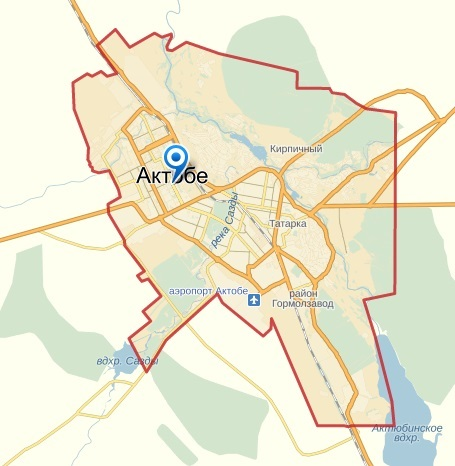
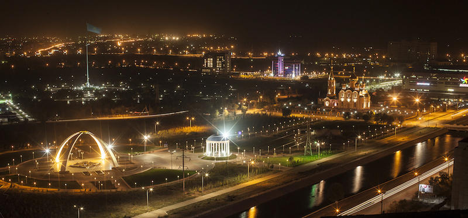
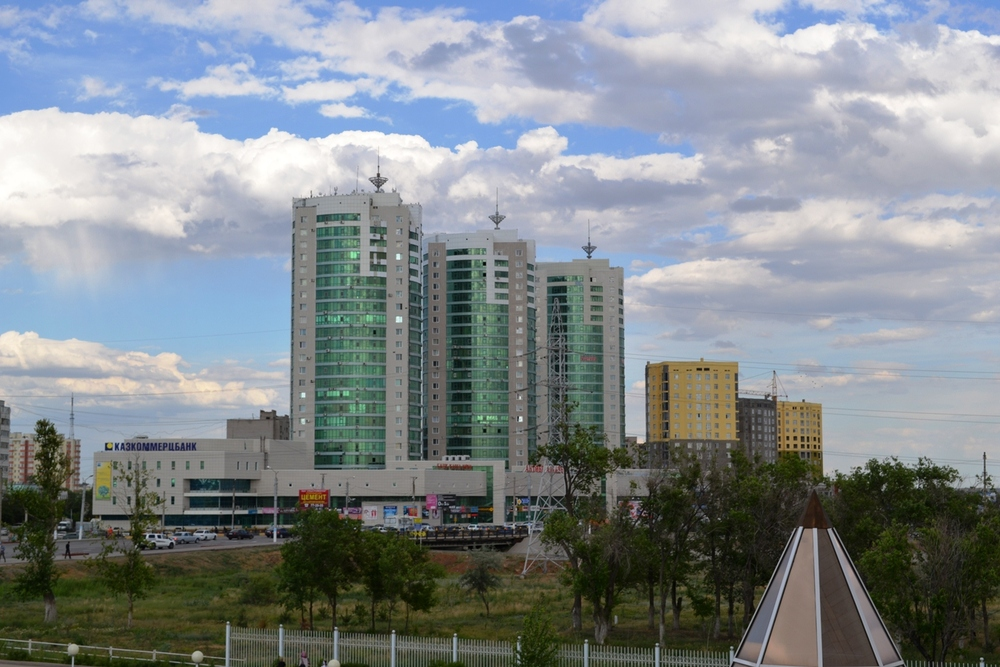
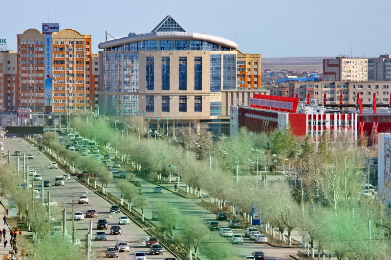

 Aktobe it’s a city which located in Western Kazakhstan, also it’s the administrative center of Aktobe region. City takes fifth place among the largest cities of Kazakhstan residents and is the largest city in Western Kazakhstan. In Kazakh Aktobe means "White Hill». Among nation are many interesting legends about origin of name of Aktobe city. One of them says that once in ancient times in the wide Kazakh steppes, lived a mighty and brave warrior, whose name was Karasai. Nobody has been able to beat him in a fair fight. Then the cunning enemies decided to lure him into an ambush and killed treacherously. After his death, people laid at his grave huge white mound, which was on the territory of Aktobe. Nowadays over there work Ferroalloy factories,companies of agricultural machines, companies which produce chromium compounds , roentgen's equipment, oil equipment. Chemical industry, food, light industry very good developed, one of the most developed spheres it is production of alcoholic beverages. Also in the near future,the government plans to open factories of gas processing and mining. In the territory of the city is concentrated a large number of the major oil and gas fields. One of the important transcontinental highways,which connect Europe with Central Asia,Avto Dorozhnaya Shymkent - Samara goes through the territory of region. The architecture of the city is eclectic - new buildings located next to buildings which was built at soviet period, furthermore,you can see many preserved buildings from pre-revolutionary time. Modern Aktobe today one of the largest industrial, business and cultural centers of the country.
|  |  |  |